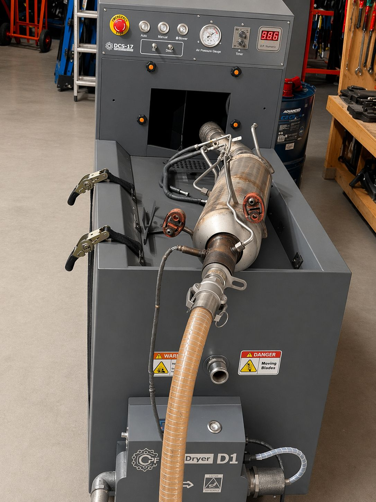

Dedicated DPF deep cleaning for stronger DPF restrictions when a more intensive cleaning process is required. AG Auto-Tech Tadley supports customers from Thatcham and surrounding areas with professional workshop service, diagnostics and clear advice before work is carried out.
Ignoring warning signs can lead to extra damage, repeat faults, poor drivability or higher repair costs. We recommend checking the vehicle properly before replacing parts or continuing to drive with the same symptoms.
Looking for dpf deep clean in Thatcham? Our workshop is based in Tadley and is easy to reach from Thatcham. We help with specialist services including DPF work, diagnostics, coding, gearbox service, tyres and wheel alignment.
Use the booking option below, call us, or message on WhatsApp with your vehicle registration, symptoms and preferred date.
Send your request directly to AG Auto-Tech Tadley.
Ash Park Business Centre, Little London, Tadley RG26 5FL